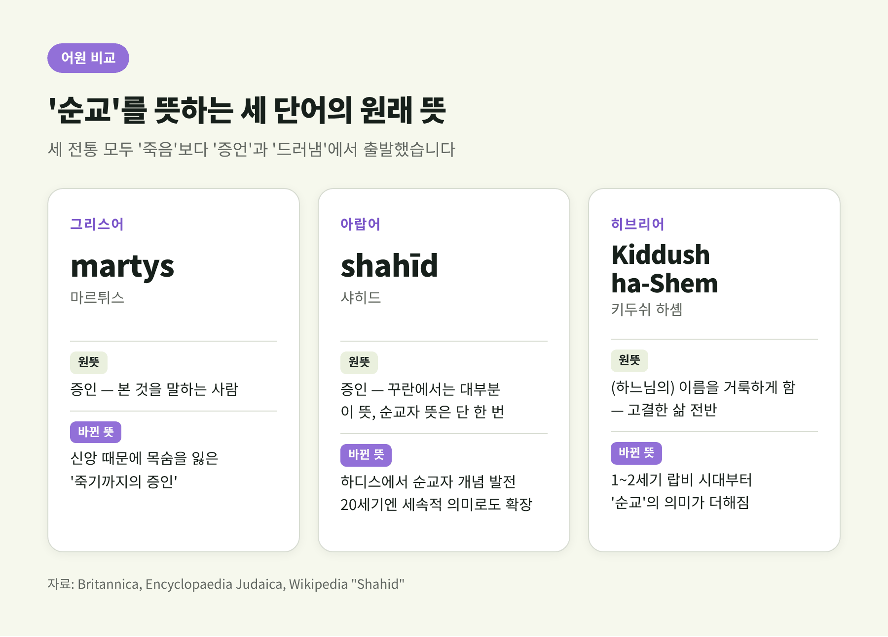
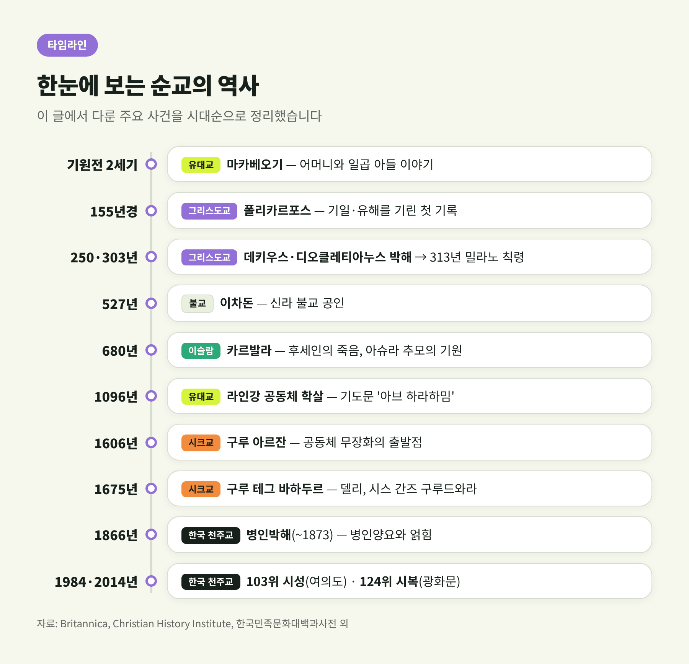
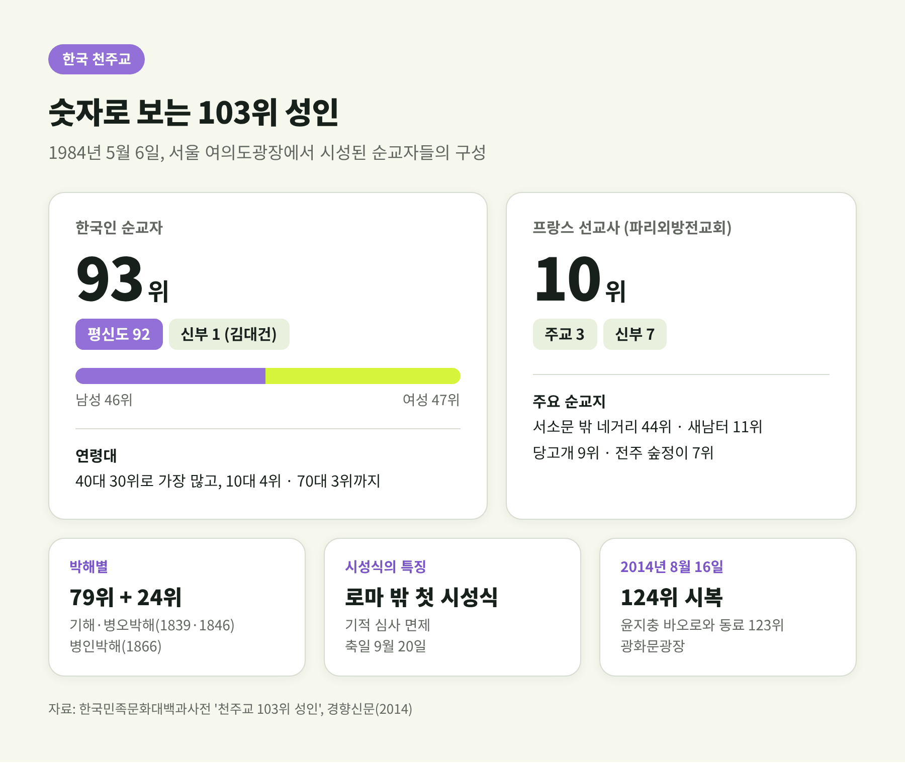
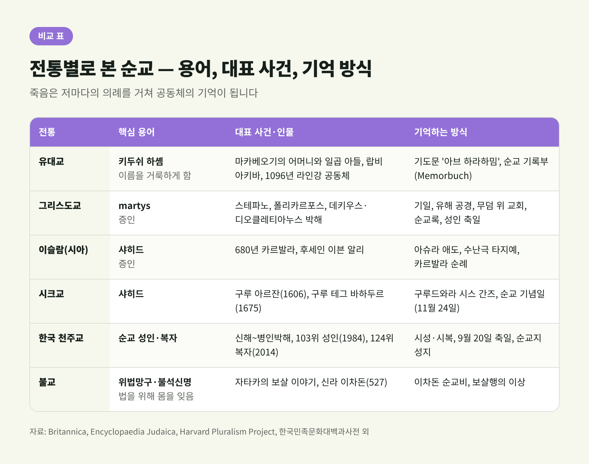
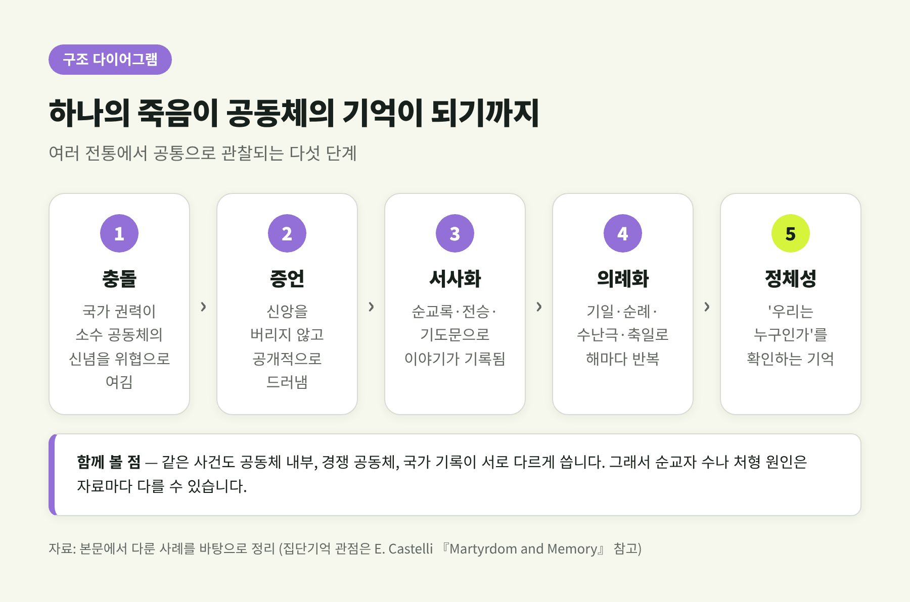

순교의 비교종교학 — 죽음은 어떻게 증언이 되고 공동체의 기억이 되었나

이번 글에서는 순교를 비교종교학의 눈으로 정리해 보겠습니다. 유대교, 그리스도교, 이슬람, 시크교, 한국 천주교, 불교에서 '순교'라는 말이 어떻게 생겨났고, 공동체가 그 죽음을 어떻게 기억해 왔는지 차례로 살펴봅니다.
미리 요약하면 이렇습니다. 여러 전통에서 순교를 뜻하는 말은 본래 '증인'이었습니다. 그리고 순교는 대개 국가 권력과 소수 공동체가 부딪친 자리에서 생겨났고, 기일·기도문·순례·축일 같은 기억의 장치를 거치며 공동체 정체성의 중심이 되었습니다.
이 글은 어느 신앙이 옳다거나 그르다고 말하지 않습니다. 각 전통이 순교를 어떻게 이해하고 기억하는지, 그 구조를 살피는 것이 목적입니다.
■ '순교자'는 원래 '증인'이었습니다
영어 martyr의 뿌리는 그리스어 martys입니다. 뜻은 단순히 '증인'이었습니다.
신약성서도 처음에는 이 단어를 그 뜻으로 썼습니다. 그러다 신앙 때문에 목숨을 잃은 사람, 이른바 '죽기까지의 증인'을 가리키는 말로 좁아졌습니다(브리태니커).
이슬람의 샤히드(shahīd)도 아랍어로 '증인'입니다. 흥미롭게도 꾸란에서 이 말은 대부분 '증인'의 뜻으로 쓰이고, '순교자'의 뜻은 단 한 번 나옵니다. 죽음으로 증언한다는 의미는 후대 하디스 문헌에서 본격적으로 다뤄졌습니다.
유대교의 표현은 결이 조금 다릅니다. 키두쉬 하솀(Kiddush ha-Shem)은 '(하느님의) 이름을 거룩하게 함'이라는 뜻입니다. 죽음 자체보다, 그 행동이 신의 이름을 세상에 어떻게 드러내는지에 초점이 있습니다.
예전엔 '본 것을 말하는 사람'이었습니다. 지금은 '목숨으로 신념을 드러낸 사람'을 뜻합니다. 이 의미 변화 자체가 순교라는 현상의 핵심을 보여줍니다.
참고로 martys를 '기억하다'라는 어근과 잇는 학설도 있습니다. 다만 음운상 근거가 약하다는 반론이 있어 정설로 보기는 어렵습니다.

■ 유대교 — 이름을 거룩하게 하는 일, 그리고 생명 우선의 원칙
키두쉬 하솀은 처음부터 순교만을 뜻하지 않았습니다. 정직하고 고결한 행동으로 신의 이름을 빛내는 일 전반을 가리켰습니다. 남이 보지 않는 곳에서의 선행도 여기에 포함됩니다.
순교의 의미가 더해진 것은 대략 1~2세기 랍비 시대부터입니다.
대표적 이야기는 마카베오기에 전합니다. 기원전 2세기, 안티오코스 왕의 압박 속에서 율법이 금한 음식을 거부하고 목숨을 잃은 어머니와 일곱 아들의 이야기입니다(마카베오기 하 7장). 2세기에는 랍비 아키바가 로마의 토라 교육 금지령을 어기다 처형되었고, 탈무드는 그가 마지막 순간 신앙고백문 '셰마'를 암송했다고 전합니다.
눈여겨볼 점은 유대 율법이 순교의 범위를 좁게 정했다는 것입니다. 2세기 리다 회의의 결론은 이렇습니다.
- 우상숭배, 성적 부도덕, 살인 — 이 세 가지만은 죽더라도 범하지 않는다.
- 그 밖의 계명은 생명을 지키기 위해 어겨도 된다.
원칙은 생명 보존이고, 순교는 예외인 셈입니다.
중세에는 1096년 십자군 시기 라인강 유역 공동체가 학살당한 뒤 기도문 '아브 하라하밈'이 만들어졌습니다. "이름의 거룩함을 위해 목숨을 바친 거룩한 공동체"를 기억하는 기도입니다. 순교가 기도문이라는 형식으로 공동체 기억에 새겨진 사례입니다.
내부 논쟁도 있었습니다. 중세 유대 철학자 마이모니데스는 강요된 상황에서 겉으로 다른 신앙을 고백하는 것까지 죽음으로 거부할 필요는 없다고 보았습니다. 홀로코스트 희생자를 '순교자'로 부를지를 두고서도 견해가 갈립니다. 배교의 선택지조차 없었기에 순교로 본다는 시각이 있고, 죽음을 '선택'한다는 전통적 개념과는 다르다는 지적도 있습니다.
■ 초기 그리스도교 — "피는 씨앗"이라는 말과 성인 공경의 시작
그리스도교 전통은 스테파노를 첫 순교자로 기억합니다. 이후 로마제국에서 간헐적 박해가 이어졌습니다. 250년경 데키우스 황제는 시민에게 황제를 위한 제사를 요구했고, 이것이 첫 제국 전역 박해로 꼽힙니다. 303년 디오클레티아누스 때 시작된 '대박해'는 311년 갈레리우스의 관용 칙령으로 멈췄고, 313년 밀라노 칙령으로 종교 자유가 선포되었습니다.
이 시기에서 유명한 문장이 하나 나옵니다. 2~3세기 교부 테르툴리아누스의 『호교론』 50장입니다.
"당신들이 우리를 베어 넘길수록 우리는 더 많아진다. 그리스도인의 피는 씨앗이다."
흔히 인용되는 "순교자의 피는 교회의 씨앗"은 이 원문을 다듬어 전해진 표현입니다.
순교는 곧 기억의 의례로 이어졌습니다. 155년경(167년 설도 있음) 스미르나의 주교 폴리카르포스가 순교하자, 제자들은 유해를 모시고 그 기일을 기념하려 했습니다. 순교자의 기일과 유해를 함께 기린 가장 이른 사례로 알려져 있습니다. 4세기 공인 이후에는 순교자 무덤 위에 교회가 세워지고 순례가 활발해졌습니다. 현존하는 가장 오래된 순교록은 411년의 시리아어 문헌입니다.
학계에는 다른 시각도 있습니다. 성서학자 캔디다 모스는 첫 3세기 동안 제국 차원의 공식 박해는 길게 잡아 약 12년이었고, 나머지는 지역적·산발적이었다고 봅니다. 순교담 상당수가 후대에 편집·윤색되었다는 주장입니다. 반면 폴 마이어 등은 그리스도교와 비그리스도교 자료가 모두 실제 박해를 증언한다며, 과장을 인정하는 선에서 그쳐야 한다고 반박합니다.
어느 쪽이든 공통된 지점은 있습니다. 순교 '이야기'가 공동체를 결속하는 힘을 가졌다는 점입니다. 종교학자 엘리자베스 카스텔리는 순교 서사를 일종의 '문화 만들기'로 보고, 순교자 개인보다 그 이야기를 기록한 이들이 어떻게 기억을 짰는지에 주목했습니다.
■ 이슬람 — 샤히드의 넓은 범주와 카르발라의 기억
이슬람에서 '순교자=전사'라는 인상은 흔한 오해에 가깝습니다.
꾸란은 신의 길에서 죽은 이를 "죽었다고 여기지 말라, 주님 곁에 살아 있다"고 말합니다. 그런데 하디스가 꼽는 순교자의 범주는 생각보다 넓습니다. 하디스 모음집 『사히흐 부하리』는 역병, 복부 질환, 익사, 건물 붕괴로 죽은 이와 신의 길에서 죽은 이를 함께 순교자로 듭니다. 출산 중 숨진 여성, 부당하게 살해된 사람도 순교자로 볼 수 있다는 전승이 있습니다.
학자들은 특정인을 단정해 샤히드라 부르기보다 "신께서 그렇게 받아주시길 바란다"고 말하라고 권하기도 했습니다. 순교 판정을 사람이 독점하지 않는다는 절제가 담긴 셈입니다.
시아파에게 순교의 중심에는 카르발라가 있습니다. 680년 10월 10일(이슬람력 무하람 10일), 예언자 무함마드의 손자 후세인과 약 72명의 일행이 우마이야 칼리프 야지드 1세가 보낸 군대(약 4,000명 추정)에 맞섰고, 후세인과 남성 동행 대부분이 목숨을 잃었습니다.
이날은 '아슈라'라는 이름으로 매년 기억됩니다. 시아 공동체는 공적 애도 의식, 사건을 재연하는 수난극 '타지예', 카르발라 성묘 순례로 이날을 지킵니다. 일부 지도자들은 몸을 해치는 애도 관행을 삼가고 헌혈로 대신하자고 권해 왔습니다. 같은 날 순니파는 노아와 모세 전승과 관련해 자발적 금식을 합니다.
해석도 갈립니다. 순니와 시아는 기본 사실에는 대체로 동의하지만, 순니는 세속 권력의 유혹에 대한 경고로 읽는 경향이 있습니다. 시아는 이 사건을 불의에 맞선 희생의 원형이자 공동체 정체성의 출발점으로 기억합니다. 학자 아크바르 아흐메드는 이 이야기가 "폭정과 억압에 맞서는 강력하고 감정적인 결집점"이 되었다고 설명합니다.
20세기 이후 샤히드는 민족·국가를 위해 죽은 이에게도 쓰이는 세속적 말로 넓어졌습니다. 같은 맥락에서 현대 폭력 집단이 공격 행위를 '순교'로 포장하는 일도 있었습니다. 그러나 2014년 이슬람 학자 122명이 IS 지도자에게 보낸 공개서한처럼, 주류 종교계와 학계는 무고한 이를 해치는 행위를 순교로 인정하지 않는다는 입장을 분명히 해 왔습니다.

■ 시크교 — 두 구루의 죽음이 바꾼 공동체의 얼굴
시크교에서도 순교자를 '샤히드'라 부릅니다. 그 중심에는 두 구루가 있습니다.
5대 구루 아르잔은 1604년 경전 『아디 그란트』를 편찬하고 암리차르의 하르만디르 사히브(황금사원) 건립을 이끈 인물입니다. 1606년 무굴 황제 자한기르에게 체포되어 라호르에서 생을 마쳤습니다. 원인으로는 반란 왕자 후스라우를 축복했다는 혐의, 커져 가는 영향력에 대한 견제 등이 거론되며, 세부 경위에는 여러 설명이 있습니다.
그의 죽음 이후 공동체는 달라졌습니다. 아들인 6대 구루 하르고빈드는 두 자루의 칼을 차고 군사 훈련을 시작했습니다. 학자들은 이를 시크 공동체 무장화의 출발점으로 봅니다.
9대 구루 테그 바하두르는 1675년 11월 11일 델리 찬드니 초크에서 황제 아우랑제브의 명령으로 처형되었습니다. 그 자리에는 지금 구루드와라 시스 간즈 사히브가 서 있고, 11월 24일은 그의 순교 기념일로 지켜집니다. 2025년이 350주년이었습니다.
이 사건의 해석은 특히 다양합니다.
- 시크 전승: 강제 개종에 시달리던 카슈미르 힌두들의 요청을 받고, 비무슬림의 신앙 자유를 지키려다 목숨을 잃었다.
- 역사가 사티시 찬드라: 당시 카슈미르 힌두 박해를 언급한 동시대 자료를 찾지 못했다.
- 페르시아·무굴 측 기록: 그를 반란자로 묘사한다.
- 연구자 루이 페넥: 다른 종교가 아니라 자기 신앙을 위해 죽었다고 본다.
같은 죽음도 누가, 어떤 공동체의 이름으로 기억하느냐에 따라 서사가 달라집니다. 그의 유산을 오늘날 정치적으로 재해석하는 문제를 두고 인도 안팎에서 논쟁이 이어지는 것도 그래서입니다.
■ 한국 천주교 — 평신도 공동체와 103위 성인
한국 천주교는 선교사 없이 시작되었다는 점이 특징입니다. 1784년 베이징에서 세례를 받고 돌아온 평신도로부터 공동체가 생겨났습니다.
조선 조정과의 충돌은 곧 시작되었습니다. 1791년 윤지충과 권상연이 조상 위패를 불태운 일로 처형되며 신해박해가 일어났고, 1801년(신유), 1839년(기해), 1846년(병오), 1866년(병인)으로 박해가 이어졌습니다. 신분을 가리지 않고 모이는 신자 공동체는 유교적 위계를 흔드는 체제 위협으로 여겨졌습니다.
대표적인 박해는 흥선대원군 집권기인 1866년부터 1873년까지 이어진 병인박해입니다. 프랑스 선교사들이 처형되자 프랑스 함대가 강화도를 침입했고(병인양요), 조정은 신자들이 외세와 내통했다고 보아 박해를 더 거세게 했습니다. 종교 문제와 외교·안보 문제가 한데 얽힌 것입니다.
순교자 수에는 주의가 필요합니다. 흔히 '병인박해 8천 명 순교'라고 말하고, 1984년 교황 강론은 한 세기도 안 되는 기간의 순교자를 약 1만 명으로 언급했습니다. 반면 한국민족문화대백과사전은 8천 명설을 풍문에 근거한 과장으로 보고, 기록상 확인되는 순교자를 약 1,400명으로 서술합니다. 기록되지 않은 순교자가 더 있었을 가능성도 함께 밝힙니다.
1984년 5월 6일, 교황 요한 바오로 2세는 서울 여의도광장에서 순교자 103위를 성인으로 선포했습니다. 로마 밖에서 열린 첫 시성식이었고, 일반적으로 요구되는 기적 심사가 면제되었습니다. 2014년 8월 16일에는 프란치스코 교황이 광화문광장에서 윤지충 바오로와 동료 123위, 모두 124위를 복자로 선포했습니다.

103위의 구성을 보면 이 공동체의 성격이 드러납니다. 한국인 93위 가운데 성직자는 김대건 신부 한 명뿐이고 나머지 92위가 평신도입니다. 남성 46위, 여성 47위로 성비도 거의 같습니다. 순교자 명단 자체가 '평신도가 세운 교회'라는 자기 이해를 뒷받침하는 기록이 된 셈입니다.
■ 불교 — '위법망구'와 이차돈
불교는 다른 전통에 비해 박해의 역사가 적은 편입니다. 그래도 진리를 위해 몸을 아끼지 않는 태도는 귀하게 여겨졌습니다. 자타카 설화의 보살 이야기가 그렇고, '몸과 목숨을 아끼지 않는다'는 뜻의 불석신명(不惜身命), '법을 위해 몸을 잊는다'는 뜻의 위법망구(爲法忘軀) 같은 말에도 그 정신이 담겨 있습니다.
한국에서 가장 잘 알려진 사례는 신라의 이차돈입니다. 527년 법흥왕 대에 그가 순교한 뒤 신라는 불교를 공인했습니다. 『삼국유사』는 당시 그의 나이를 22세로 전하고, 흰 젖이 솟았다는 전설이 함께 내려옵니다. 경주 백률사 터에서 나온 이차돈 순교비는 지금 국립경주박물관에 있습니다.
다만 불교의 경우 '순교'라는 서구 개념을 그대로 대입하기보다, 보살행과 자비라는 고유한 틀 안에서 이해하는 편이 정확합니다.
■ 비교해 보면 보이는 공통 구조
여섯 전통을 나란히 놓으면 몇 가지 공통점이 보입니다.

첫째, 권력과 소수자의 관계입니다. 안티오코스 왕과 유대 공동체, 로마제국과 초기 그리스도인, 우마이야 왕조와 후세인 일행, 무굴제국과 시크 구루, 조선 조정과 천주교 신자. 순교 서사는 대개 국가가 한 공동체의 신념을 체제 위협으로 볼 때 생겨났습니다.
둘째, 기억의 장치입니다. 기도문(아브 하라하밈), 기일과 유해 공경, 수난극과 순례(아슈라), 구루드와라와 기념일, 시성과 축일. 죽음은 의례를 거치며 해마다 다시 이야기되고, 그때마다 공동체는 "우리는 누구인가"를 확인합니다.
셋째, 서사의 다층성입니다. 같은 사건도 공동체 내부, 경쟁 공동체, 국가 기록이 저마다 다르게 씁니다. 순교자 수나 처형 원인이 자료마다 다른 것은 그래서 자연스러운 일입니다.
넷째, 절제의 장치입니다. 유대 율법은 생명 보존을 원칙으로 삼고 예외를 세 가지로 한정했습니다. 이슬람 학자들은 특정인을 순교자로 단정하지 말라고 했고, 일부 시아 지도자는 몸을 해치는 애도 대신 헌혈을 권합니다. 여러 전통이 순교를 기리면서도 죽음을 부추기지 않으려는 고민을 함께 품어 왔다는 뜻입니다.

■ 순교를 둘러싼 흔한 오해 세 가지
"순교는 곧 싸우다 죽는 것이다." 그렇지 않습니다. 유대교의 출발점은 '이름을 거룩하게 하는 삶'이었고, 이슬람의 샤히드 범주에는 질병과 사고로 죽은 이까지 들어갑니다.
"종교는 순교를 적극 권한다." 오히려 많은 전통이 순교의 조건을 엄격하게 제한했습니다. 유대 율법의 세 가지 예외, 마이모니데스의 판단이 그 예입니다.
"순교 기록은 그대로 역사다." 순교담은 신앙 공동체의 기억이자 서사입니다. 사실의 핵심을 담고 있더라도, 후대의 편집과 해석이 더해졌다는 점을 염두에 두고 읽는 편이 좋습니다.
정리하면 이렇습니다.
순교라는 말은 '증인'에서 출발했습니다. 그리고 그 죽음을 증언으로 만든 것은 결국 남은 이들의 기억이었습니다. 기도문을 외우고, 기일을 지키고, 순례를 떠나고, 이름을 성인 명부에 올리는 일이 하나의 죽음을 공동체의 이야기로 바꿔 왔습니다.
"순교는 죽음 자체보다, 그 죽음을 기억하는 공동체의 이야기다."
종교가 없는 독자에게도 이 주제가 의미 있느냐고 물으신다면, 그렇다고 답하겠습니다. 국가 권력과 소수자, 기억과 정체성의 문제는 신앙 여부와 상관없이 오늘의 사회가 함께 고민하는 질문이기 때문입니다.
참고자료
- Britannica, "Martyr" — https://www.britannica.com/topic/martyr
- Etymonline, "martyr" — https://www.etymonline.com/jp/word/martyr
- Britannica, "Shahid" — https://britannica.com/topic/shahid
- Wikipedia, "Shahid" — https://en.wikipedia.org/wiki/Shahid
- Encyclopaedia Judaica, "Kiddush ha-Shem and Hillul ha-Shem" (Jewish Virtual Library) — https://www.jewishvirtuallibrary.org/jsource/judaica/ejud_0002_0012_0_11109.html
- My Jewish Learning, "Martyrdom in Judaism" — https://www.myjewishlearning.com/article/martyrdom-in-judaism/
- Fordham Medieval Sourcebook, Tertullian, Apologeticus 49–50 — https://sourcebooks.web.fordham.edu/source/tertullian-apologeticus49-50.asp
- Christian History Institute, "Memory and preparation" — https://christianhistoryinstitute.org/magazine/article/ch156-cult-of-saints
- EBSCO Research Starters, "Diocletianic Persecution" — https://www.ebsco.com/research-starters/religion-and-philosophy/diocletianic-persecution
- Wikipedia, "The Myth of Persecution" — https://en.wikipedia.org/wiki/The_Myth_of_Persecution
- Ancient Jew Review, "Memory and Martyrdom: A Forum Honoring the Work of Elizabeth Castelli" — https://www.ancientjewreview.com/read/2026/5/13/memory-and-martyrdom-a-forum-honoring-the-work-of-elizabeth-castelli
- Britannica, "Battle of Karbala" — https://www.britannica.com/EBchecked/topic/312214/Battle-of-Karbala
- Al Jazeera, "Ashura: Why Muslims fast and mourn in Muharram" — https://www.aljazeera.com/amp/news/2020/8/28/ashoura-why-muslims-fast-and-mourn-in-muharram
- EBSCO Research Starters, "Martyrdom of the Prophet's Grandson Husayn" — https://www.ebsco.com/research-starters/military-history-and-science/martyrdom-prophets-grandson-husayn
- Harvard Pluralism Project, "The Development of the Sikh Community" — https://pluralism.org/the-development-of-the-sikh-community
- ThePrint, "Guru Arjan Dev, the martyr whose death changed the course of Sikhism" — https://theprint.in/feature/guru-arjan-dev-the-martyr-whose-death-changed-the-course-of-sikhism/401897
- Wikipedia, "Guru Tegh Bahadur" — https://en.wikipedia.org/wiki/Guru_Tegh_Bahadur
- Vatican, 요한 바오로 2세 103위 시성 미사 강론(1984. 5. 6.) — https://www.vatican.va/content/john-paul-ii/en/homilies/1984/documents/hf_jp-ii_hom_19840506_martiri-coreani.html
- Wikipedia, "Korean Martyrs" — https://en.wikipedia.org/wiki/Korean_Martyrs
- 한국민족문화대백과사전, "병인박해" — https://encykorea.aks.ac.kr/Article/E0023139
- 한국민족문화대백과사전, "천주교 103위 성인" — https://encykorea.aks.ac.kr/Article/E0056030
- 경향신문, 124위 시복 미사 보도(2014. 8. 16.) — https://www.khan.co.kr/article/201408161019241
- 서울신문, "이차돈순교비"(2007. 5. 17.) — https://m.seoul.co.kr/news/2007/05/17/20070517023004
- Wikipedia, "Letter to Baghdadi" — https://en.wikipedia.org/wiki/Letter_to_Baghdadi